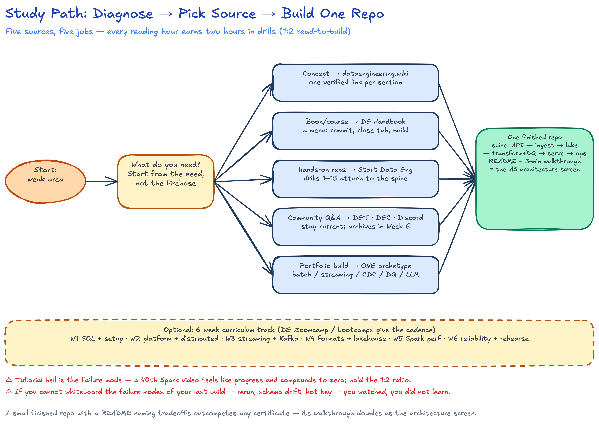
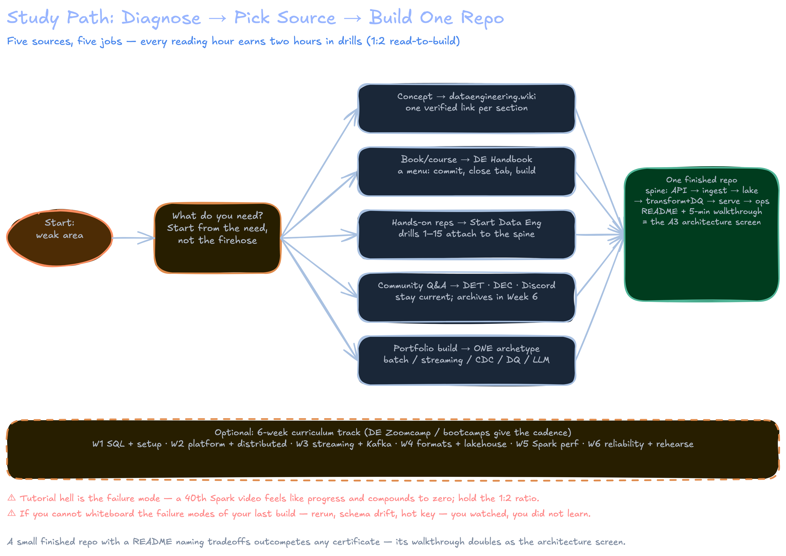

Resources & Practice Lab
Five sources cover the whole A3 surface with different jobs: the Data Engineering Wiki explains concepts, Zach Wilson's Data Engineer Handbook curates everything else, Joseph Machado's Start Data Engineering provides the builds, and two newsletters — Data Engineer Things and Data Engineering Central — keep you current. Use them as a pipeline: wiki to learn, handbook to find, SDE to build, newsletters to stay sharp.
- 1Diagnose the weak area
- 2Need a concept → Wiki
- 3Need a book or course → Handbook
- 4Need hands-on reps → SDE
- 5Need current signal → DET + DEC
- 6Attach drills to one build spine
- 7Pick ONE archetype, finish it
- 8Ship README + rehearse the walkthrough
Kappa Architecture, Idempotence — one verified link per course section, never search blind.API → ingest → lake → transform+DQ → serve → ops — one repo, layers added weekly, so reps compound.

The Five Sources at a Glance
| Source | What it is | Best for | Real entry points |
|---|---|---|---|
| Data Engineering Wiki | Community-maintained Obsidian wiki (GitHub repo) with six index sections: Concepts, Guides, Tools, Learning Resources, Community, FAQ | Concept lookups mid-build: Data Pipeline, Kappa Architecture, Idempotence, Apache Airflow | |
| Data Engineer Handbook | Zach Wilson's repo (DataExpert.io): 25+ books, free 4-week beginner + 6-week intermediate bootcamps, interview prep, projects, communities, newsletters, whitepapers, company blogs | Curation — the single index for books, courses, interview rounds, design-pattern repos | |
| Start Data Engineering | Joseph Machado's site: 100+ hands-on posts (sitemap-verified) plus paid DE and design-patterns courses; free Efficient Data Processing in Spark course | Guided builds with full code: projects, Spark, Airflow, dbt, CDC, DQ, a 3-part interview series (DSA, system design, SQL) | |
| Data Engineer Things | Newsletter of the DET global community (founder Xinran Waibel; site: 43K+ LinkedIn, 15K+ subscribers). Two editions a month: "Data Pulse" (trends, tools) and "Community Spotlight" (members, meetups, webinars) | Community, events, mentorship, curated signal — not deep technical dives | |
| Data Engineering Central | Daniel Beach ("Confessions of a Data Guy"), 24K+ subscribers, 2–3 posts/week: benchmarks (DuckDB vs Polars vs Spark), tool news, practitioner opinions, a "Back to the Basics" series, free + paid mix | Practitioner realism — opinions and benchmarks on Iceberg, DuckDB, Databricks, Rust engines |
The Canonical Reading List
The handbook's books.md names three must-reads — Fundamentals of Data Engineering, Designing Data-Intensive Applications, Designing Machine Learning Systems. Sequence for A3:
DDIA 2e (Kleppmann + Riccomini, 670 pp) shipped March 2026 — cloud-native rewrite: new ch1 (trade-offs: ops vs analytical, cloud vs self-hosted), ch2 (nonfunctional requirements), "Partitioning"→"Sharding" (ch7), new ch13 "A Philosophy of Streaming Systems", vector/AI-era storage woven in. Chapter refs for all 14 chapters free at ept/ddia2-references; free excerpt (ch1+2+9) via ScyllaDB. Note: dataintensive.net still hosts the 1st edition TOC.
| Book / resource | Why it earns the time | Deepens section |
|---|---|---|
| Fundamentals of Data Engineering | The lifecycle + undercurrents frame every interview answer wants | 01, 05 Platform architecture |
| DDIA 2e — Kleppmann & Riccomini | 2nd ed (Mar 2026): storage, replication, sharding, transactions, consistency — the distributed ground truth, now cloud/object-store native | 04 Distributed, 06, 12 Messaging |
| The Data Warehouse Toolkit (Kimball) | Dim/fact, star schemas, SCD — asked in every modeling round | 02, 15 Modeling + design |
| Learning Spark, 2nd Edition (free PDF) | DataFrame API, Catalyst, AQE — free and current | 03, 10, 11 Spark |
| Streaming Systems | Watermarks, windows, exactly-once semantics from first principles | 06 Batch vs streaming |
| Apache Iceberg docs | Spec-level table format mechanics behind our Delta/Iceberg/Hudi compare | 09 Table formats |
| Data Engineering Design Patterns | Named patterns (idempotency, backfill, DQ) to cite verbatim | 13 Reliability |
| Snowflake Data Engineering (Manning) | Warehouse-native DE — the Snowflake side of section 08 | 08 Snowflake vs Databricks |
| Designing Machine Learning Systems | Handbook must-read #3; where DE meets ML lifecycle | 05, 14 |
| Handbook whitepapers list | GFS, MapReduce, Lakehouse CIDR 2021 | 04, 07 Lakehouse |
DDIA 2e chapter → course section: ch6–10 → 04 (replication, sharding, txns, failure modes, consensus); ch11–13 → 06 + 12 (batch, stream processing — ch13 is new in 2e, unbundling/lambda critique); ch1–2 → 05 (trade-offs, nonfunctionals); ch4–5 → 07/09 (storage, encoding); ch2+9 → 13 (reliability). Older chapter references online are 1e — numbering shifted +1 from ch2 onward.
Free Courses & Communities
| Course | Cost / format | Notes |
|---|---|---|
| DataTalks.Club DE Zoomcamp | Free cohort (Jan–Apr) + self-paced; course page | Docker, Terraform, orchestration, warehouse, streaming, projects with peer review |
| DataExpert 6-week intermediate bootcamp | Free video bootcamp; materials in handbook repo | Dimensional modeling, fact tables, Spark, Flink, KPIs, pipeline maintenance |
| Databricks AI bootcamp | Free 1-week | Lakebase, vector DBs, agent apps — current Databricks surface |
| Efficient Data Processing in Spark | Free (Joseph Machado) | Spark performance + testing — pairs with section 11 |
| IBM Data Engineering for Everyone | Free edX course | Gentle overview if any section feels shaky |
| 50+ free data lake SQL questions + 100+ FAANG SQL questions | Free practice banks | Timed SQL reps for section 02 and screens |
| Community | What you actually get |
|---|---|
| EcZachly Discord | Zach Wilson's DataExpert community; bootcamp cohorts, mock interviews |
| DataTalks.Club Slack | Course cohorts (#course-data-engineering), book clubs, podcasts |
| Data Engineer Things | Webinars, meetups, mentorship, blog + events |
| Seattle Data Guy Discord | Ben Rogojan's community; project feedback |
| dbt Community | Analytics-engineering Slack, local meetups |
| r/dataengineering | Daily practitioner Q&A, salary and tool threads |
Curated Reading by Topic
One best external link per course section — verified reachable; never search blind when the index exists.
| Section | Read first | Link |
|---|---|---|
| 01 EPAM A3 assessment | Data architecture interview guide | How to pass the data architecture round |
| 02 SQL deep dive | Window functions, 6 concepts | 6 concepts to clearly understand window functions |
| 03 Python & PySpark | Local Spark setup | Spark local setup |
| 04 Distributed fundamentals | GFS paper | The Google File System |
| 05 Platform architecture | Pipeline architecture tutorial | Architect data pipelines |
| 06 Batch vs streaming | Kappa vs Lambda | Wiki: Kappa Architecture |
| 07 Warehouse vs lakehouse | The original lakehouse paper | Lakehouse: CIDR 2021 |
| 08 Snowflake vs Databricks | Vendor engineering blog | Databricks data engineering blog |
| 09 Table formats | Why table formats exist | What & why of table formats |
| 10 Spark vs Flink | Flink's own docs | Flink documentation |
| 11 Spark optimization | Three optimization techniques | How to optimize your Spark jobs |
| 12 Messaging & Kafka | Kafka what/why/how | What, why and how Apache Kafka |
| 13 Reliability | Idempotency + DQ checks | Idempotent data pipelines, Types of DQ checks |
| 14 This lab | The five sources above | Data Engineer Handbook |
| 15 Interview playbook | Handbook interview file | interviews.md |
Build spine every drill attaches to (one repo, layers added weekly):
[API/DB source] --> [ingest: batch | CDC] --> [lake: S3/MinIO + Iceberg]
--> [transform: Spark/dbt + DQ gates] --> [serve: warehouse/BI]
--> [ops: Airflow + retries + backfill + CI] --> README + walkthrough
Drills: Exercises That Build Skill
Each drill names its tutorial or source and the section it trains. Build first; read only what the build forces.
- Replicate Local development setup + Docker for DE: Postgres + MinIO + Spark containers, one
make up. [03] - Sessionize a clickstream with 30-min gaps using window functions from the window-functions post. [02]
- Solve 10 questions from dataexpert.io/questions under a 20-minute timer; redo the two slowest in pure CTE form. [02, 15]
- Run a groupBy + broadcast join in the Spark local setup container; screenshot the DAG and explain each stage. [03, 11]
- Apply the three Spark optimization techniques: salt a hot key, re-measure stage time, record the delta in the README. [11]
- Test a Spark job with pytest for PySpark: fixture data, one transform test, one schema assertion. [13]
- Run a 3-topic Kafka per the Kafka what/why/how post; Python consumer with manual offset commit, kill and resume mid-partition. [12]
- Stream Debezium CDC from Postgres to Kafka; replay one UPDATE end-to-end and prove no duplicates. [12, 13]
- Build the batch beginner project: API → S3 → warehouse → dbt. [05]
- Add Great Expectations checks that fail the build on null keys and row-count drift >5%. [13]
- Make yesterday's partition rerun idempotently — overwrite partition, zero dupes. [13]
- Build SCD2 with MERGE INTO on Spark + Iceberg; query time travel at two snapshots. [09]
- Orchestrate drills 9–12 in the Airflow tutorial: retries, SLA, one manual backfill. [05]
- Wire dbt tests into CI — merge blocked on failing test. [13]
- Write a 1-page design doc for your portfolio repo and present it aloud in 5 minutes; compare against the SDE system design interview post. [15, 01]
Portfolio Projects That Get You Hired
Archetypes grounded in SDE free templates, the handbook projects.md (Uber E2E on BigQuery, LLM pipelines), and the practical DE project.
| Archetype | Stack | Deliverable | Interview angle |
|---|---|---|---|
| Batch lakehouse | API + MinIO/S3 + Iceberg + Spark + Airflow (drills 9, 12–13) | Modeled tables, time-travel demo, DAG diagram in README | Partitioning, small-file compaction, cost per run |
| Streaming clickstream | Kafka + Python consumer + Postgres/ClickHouse (drill 7) | Live dashboard over a 3-topic pipeline | Offset semantics, replay, at-least-once vs exactly-once |
| CDC history pipeline | Debezium + Kafka + Spark MERGE (drill 8) | Postgres → lake sync with SCD2 (drill 12) | Deletes, schema drift, out-of-order events |
| DQ-gated platform | dbt + Great Expectations + CI (drills 10, 14) | Pipeline that blocks merge on red tests | Fail-loud vs warn, alert routing, blast radius |
| LLM-assisted pipeline | Python + LangChain (handbook LLM lecture/lab) | Text-to-SQL over your own lake | Where AI broke, what validation you added |
Pick ONE archetype and finish it. A small finished repo with a README naming tradeoffs beats three half-cloned tutorials.
- Week 1 — SQL + setup: sections 02–03; read the window functions post, skim interviews.md to know the target. Drills 1–3.
- Week 2 — Platform + distributed: sections 04–05; DDIA 2e ch1–2 (trade-offs, nonfunctionals) + ch6 (replication), GFS. Drill 9 started (it is the spine).
- Week 3 — Streaming + Kafka: sections 06, 12; wiki Kappa, Kafka post. Drills 7–8; Streaming Systems watermark chapter.
- Week 4 — Formats + lakehouse: sections 07, 09; Lakehouse CIDR paper. Drill 12; Kimball SCD chapter.
- Week 5 — Spark performance: section 11; Learning Spark 2e PDF + optimization post. Drills 4–6.
- Week 6 — Reliability + rehearse: sections 13, 15; idempotency and DQ checks. Drills 10–11, 14–15. Ship repo + walkthrough; finish Data Engineering Central/DET archives for current tool takes.
Open books.md, commit to the FDDE → DDIA pair above, then close the tab and build. One book finished per course phase — pair each reading week with its drill set so every chapter lands on code you just wrote.
Watching a 40th Spark video feels like progress and compounds to zero. Hold a 1:2 read-to-build ratio: every hour of reading, two hours in drills 1–15. If you cannot whiteboard the failure modes of your last build — what breaks on rerun, on schema drift, on a hot key — you watched, you did not learn.
Key Takeaways
- Five sources, five jobs: wiki for concepts, handbook for curation, SDE for builds, DET for community, DEC for practitioner signal.
- The reading list is 4 books + 2 papers, each tied to a course section — not the handbook's 25-book firehose.
- Free structure exists: DE Zoomcamp and the DataExpert bootcamp supply cadence, community, and peer review.
- Curated reading maps all 15 sections to one verified starting link each; drills 1–15 attach to the same build spine so reps compound.
- One finished portfolio archetype with a README of tradeoffs outcompetes any certificate.
Interview Lens
- When asked "how do you keep up", name the handbook and cite one thing you applied — e.g. the idempotency post that changed your rerun design — never the list itself.
- Anchor stories in drill language: "I salted the hot key and stage time dropped 40%" beats "I know Spark tuning".
- The drill-15 walkthrough IS the A3 architecture screen — rehearse it on your own repo until 5 minutes feels short.
- Borrow DEC's benchmark habit: bring one current number ("DuckDB beat Spark on my 1GB join by 3x local") to sound current, not memorized.